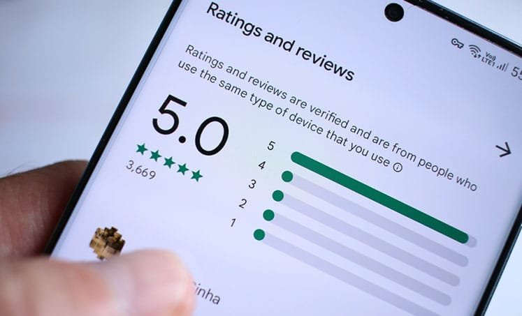

Howdy, this is Ronnie Deaver, founder & CEO of NoBull Marketing. I’m here to discuss the secret tactic top lawyers are using to generate 120+ 5-star Google reviews every. single. year. completely on autopilot. So what’s that actually look like? That’s usually, say, 10 plus new reviews every. single. month.
Before we dive into the specifics of how to achieve this, I want to give you some context about my background and experience. First of all, who am I? Why should you listen to me?
- I have personally managed over 200 law firm marketing campaigns. I’ve worked with all types of law firms, attorneys, and mediators, from personal injury to real estate to immigration, you name it.
- I’ve also devoted myself to becoming an expert exclusively in marketing legal and legal related services. I don’t work with other types of service businesses like plumbers or restaurants.
- Finally, I’ve started the only marketing company (that I know of) that puts our money where our mouth is by committing ourselves to driving your profitability. With our Three Month Profit and 12 Month Double or Nothing Guarantees, we put our own skin in the game and take a bet on ourselves in addition to you when we work with you. We’ll talk more about that some other time. For now, let’s go ahead and start talking about why 5-star reviews are so important.
Let’s Dive In: Why are 5-Star Google Reviews so Important?
Because getting reviews pays a lot of money. There’s a couple of reasons for that.
The number one reason is that all roads lead to Google reviews.
Whether a potential client comes to you through a referral, Google ads, or even a billboard, they will almost always search for you on Google and read your reviews before calling you. Outside of any leads that your reviews themselves generate, all other sources of leads are impacted by your review generation. I’ve seen attorneys even lose referrals, that is potential clients who were referred to them, because they were scared away by bad reviews. So reviews are critical to your overarching marketing campaign actually making you money and your firm being as profitable as possible.
Second, approximately 73% of all law firm (or any service based business) new client leads and phone calls can be attributed to Google My Business (GMB), also known as Google Business Profile.
If you don’t know what GMB is, it’s your business’s profile on Google that shows all your reviews. You can add a lot more to your profile than just reviews, like products, questions and answers, posts, and photos. When a user searches for a certain type of business or service on Google, Google shows them matching GMB profiles at the top of the first page of search results in addition to websites. If a user searches directly for your business name, your profile will show up on the side of the search results page.
What does all this have to do with reviews? Well, 35% of the ranking factor on Google My Business comes down to reviews. 35%. That is one huge lever, right? If you can generate enough positive reviews, your profile is way more likely to rank highly, beat out competitors and show up on the first page of results when someone Googles a service you offer.
Let’s do some math: 35% (the ranking factor of reviews on GMB) x 73% (all lead generation attributed to GMB) = 25%. Approximately a quarter of all leads can be directly attributed to 5-star reviews.
Of course if you don’t have any reviews, this is not the case yet for you. But even if you have just a few reviews already, a huge percentage of your calls are probably coming from your GMB profile.
Let’s Dive In: Why are 5-Star Google Reviews so Important?
Let’s understand that reviews can be broken down into the following two components.
- Review count, which is how many reviews you have in total. Many people only think of this component.
- Review velocity, which is how frequently you receive new reviews.
Both components matter because Google would rather see you receive 10 reviews over 10 weeks than 10 reviews in one day and nothing for another 10 weeks. They want to see consistency. Google wants to show users the most consistent and highly rated product or service over time, not just a fad.
Review generation is actually much easier than most people think. There’s a myth that you can only generate reviews from paying clients, which is not true. You can generate reviews from anyone you’ve provided legitimate legal value or some sort of value related to your service to, whether paid or free.
For example, if you give someone a free consultation, you can ask for a review at the end. That’s one of my number one tips. I have a lot of clients who generate 5 to 10 reviews a month on free consultations that they’re already doing, even if they don’t all become clients.
Another example, estate planning lawyers often host seminars and webinars, but other lawyers could host these kinds of events too. The key is to ask every single attendee to leave a review at the end of the event. (Facebook ads are great for attracting attendees.)
Finally, I’ve even seen attorneys generate reviews from friends and family that they’ve given free legal advice to. As long as you’ve provided them some sort of legitimate legal value, they are a valid person to ask for a review.
Once you’ve broadened the amount of people you’re reaching out to for reviews, start using some sort of software that makes collecting reviews easier. I recommend Zapier. Nice Job is an option that’s a bit more manual. Basically what these tools do is reach out to the massive list of people you think you’ve given some sort of legitimate legal value to, free, paid or otherwise, and request a review.
Another way to automate review generation is through one of my favorite digital tools, Calendly. You can use Calendly to schedule your consultations and integrate an automation tool like Zapier to send them a review request immediately after their consultation.
I have several clients easily adding 5 to 10 reviews a month just from that. I’ve even had a client export all of their Outlook contacts from the past 20 years and generate new reviews from that list. The point is build your broad list and then put it into some sort of automation for the greatest success.
The other key to success in review generation is following up at least 3 to 6 times over 10 days after the initial request. The first time you ask a person, they’re most likely not going to respond. When you ask them the second time, they might still ignore it or forget. However, by the third or fourth request, more people start leaving reviews. So you need to follow up at least 3 times and ideally up to 6 times. That will massively increase your response rate. I’ve seen clients have upwards of 40% of their contacts leave reviews, which is a huge success.
Once you get in the habit of asking every person you’ve provided legitimate legal value to (of any sort, paid, free, or otherwise) for a review, you will easily start generating 10+ reviews Every. Single. Month. and 120+ 5-star reviews Every. Single. Year.
Let’s look at some client examples
As I mentioned earlier, I helped an attorney at Lewis & Feldman, LLC in Birmingham, Alabama automatically request every one of his Outlook contacts to leave his firm a review. As of December 2022, their GMB profile has 138 reviews with a high 4.9-star average rating. Many of these stellar reviews are generated “on autopilot” through use of an automation tool we discussed earlier too.
Another example of a fully automated review generation campaign is The Law Firm of Anthony J. Diaz in the Orlando area. I automated review requests to send after every consultation he does, paid or free. I also helped him export his contacts and request reviews from that entire email list. Although we were using a lot of old contacts, we had huge success because we followed up several times. In a period of three months, we added 30 new reviews. As of December 2022, his GMB profile has 31 reviews with a high 4.8-star average rating.
All this is to say these types of results are definitely doable for you too.
How can you implement review generation tactics in your firm as soon as possible?
You could do it yourself by creating a giant spreadsheet and throwing that into a tool like Nice Job to request reviews and follow up. However, you or a team member will have to manually upload new contacts every time. There’s also other options like Zapier which have more automatic features if you or a team member is comfortable setting that up. The downside of this method is that someone on your team will have to take responsibility for it, perhaps manually.
If you don’t want to do it yourself, reach out to NoBull Marketing. We’ll happily do it for you! Generating reviews is actually a key component of all of our programs. We do it completely automatically with a combination of our in-house tools and Zapier. Again, we ensure that everything is as automatic and smooth as possible, so you don’t have to do any of the grunt work.
Every time you do a consultation, we’ll automatically follow up to request a review. Every time you close a case, we’ll automatically follow up to request a review. We’ll even reach out to all your contacts, past and present, to request a review if you choose.
Whatever we have to do, we will find a way to get it done and help you easily generate 120+ 5-star Google reviews Every. Single. Year.
If we work together, we guarantee you will see a huge spike in lead generation compared to your current marketing campaign or lack thereof. You will receive way more phone calls from Google My Business, which is the source of 73% of your overall lead generation.You will even receive more phone calls from the remaining 27% of lead sources, like referrals and print ads, once they see your reviews.
If you’re interested in learning more about our program offerings, click “Book a High Impact Revenue Session” at the top right of our website to schedule a time to speak with me.
Wrapping Up
I know that time is the most valuable resource, so thank you sincerely for all the time you’ve spent with me today.
Remember to think broadly and don’t be fooled by myths. Be consistent and build positive business habits.
I’m ready to work together to make your goals for your law firm happen if you are.